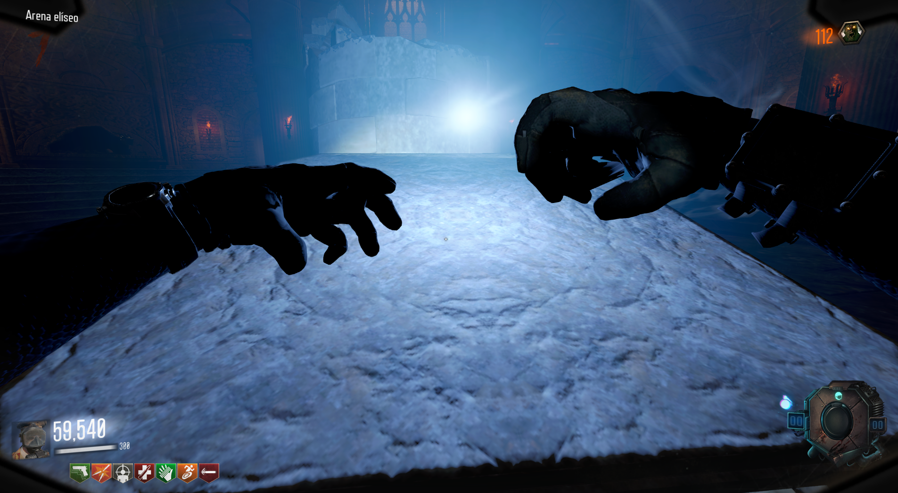
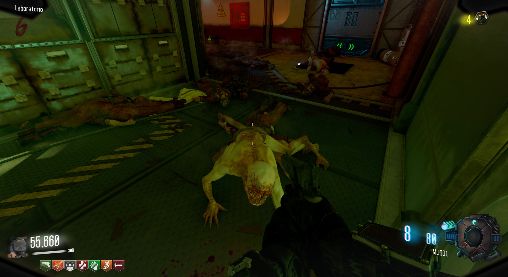
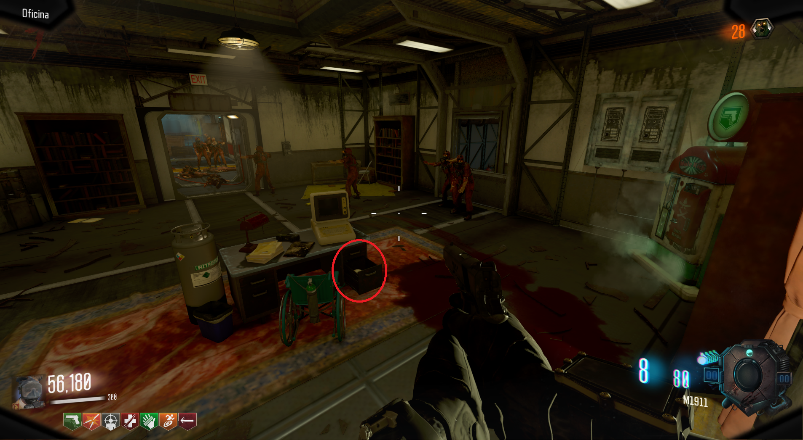
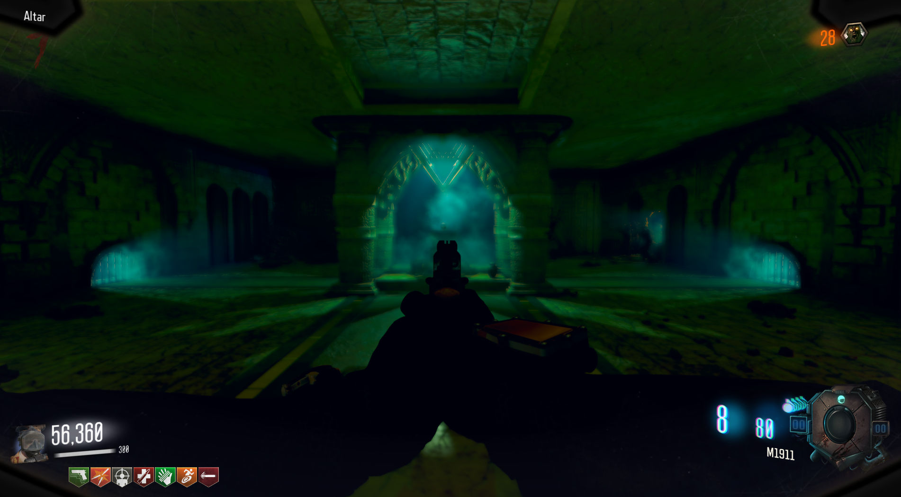
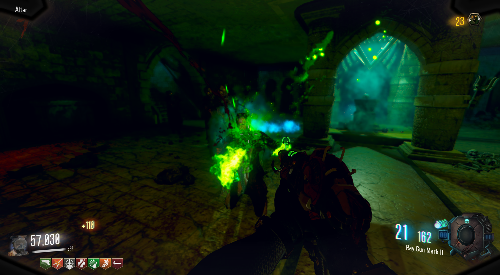
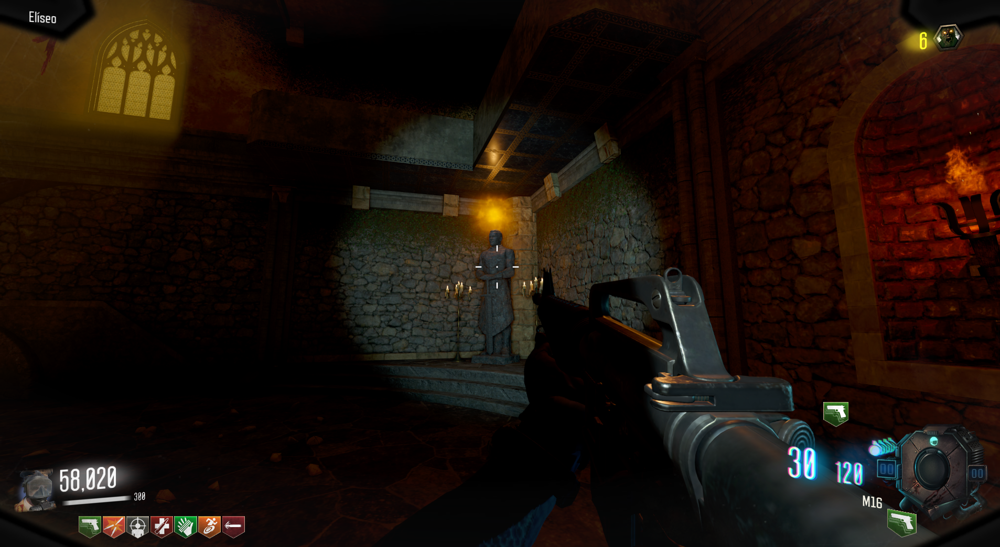
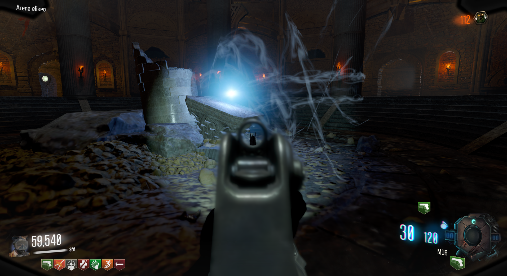

Puños (Leviathan)

Para obtener los puños, debemos de esperar a la ronda de los leapers.

Cuando acabemos con todos, aparte de la munición máxima, nos darán unas llaves.

En la Oficina del Laboratorio, podremos abrir un cajón y obtener la calavera.

Tendremos que llevarla a la zona bajo el Biodomo y colocarla en el altar.

Una vez ahí, tendremos que matar zombies para cargarla.

Cuando no reciba más almas, interactuaremos con la calavera.

Se abrirá un portal detrás de nosotros.

Al entrar, veremos 4 estatuas con luces en la cabeza. Tendremos que tirarle granadas a cada una de ellas.

Luego de esto, todos los jugadores deberán de interactuar a la vez con la luz azul del medio.

Batalla contra el Jefe:
Llegaremos a una nueva zona donde tendremos que enfrentarnos a un buzo.

Tiene diferentes ataques y habilidades:


Cada vez que le hagamos mucho daño, cargará su ataque más fuerte.
Tendremos que hacer que lo cargue dos veces, y la tercera vez que le hagamos el daño suficiente, morirá.
Si lo hicimos bien, podremos obtener los puños en la luz.
